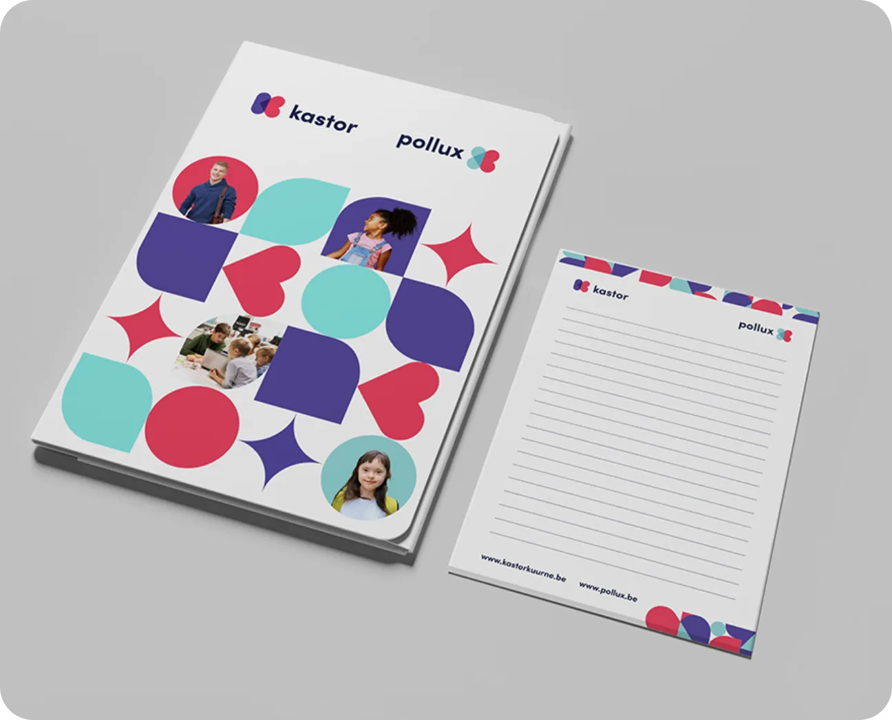
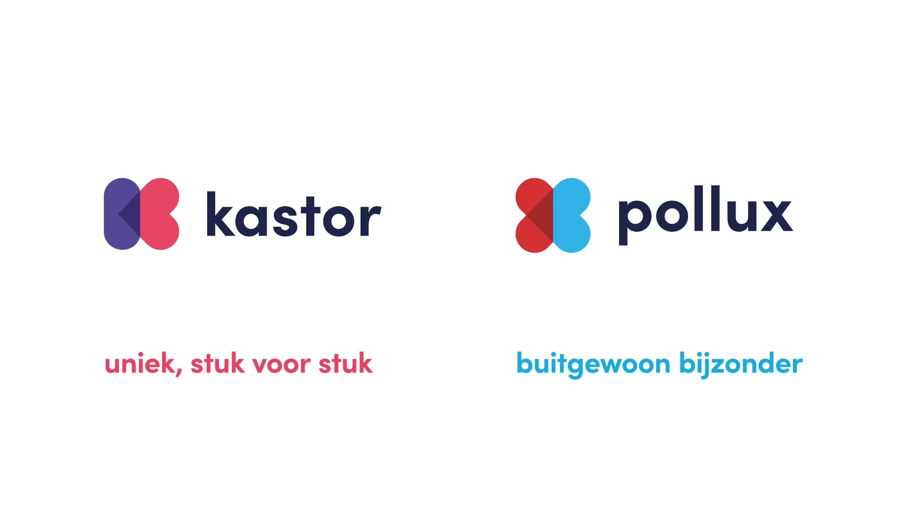
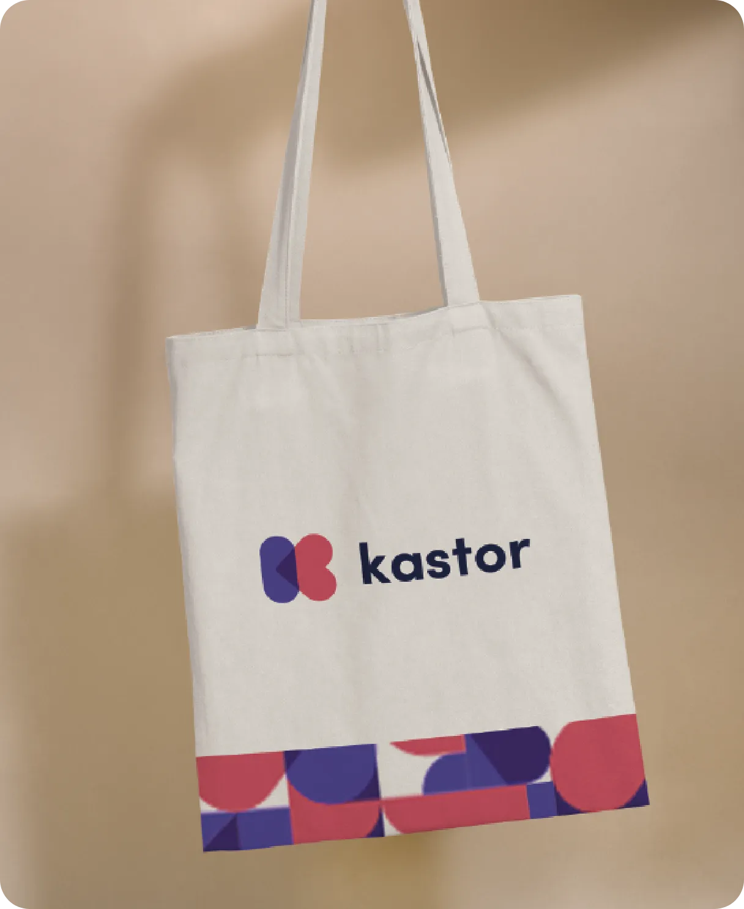
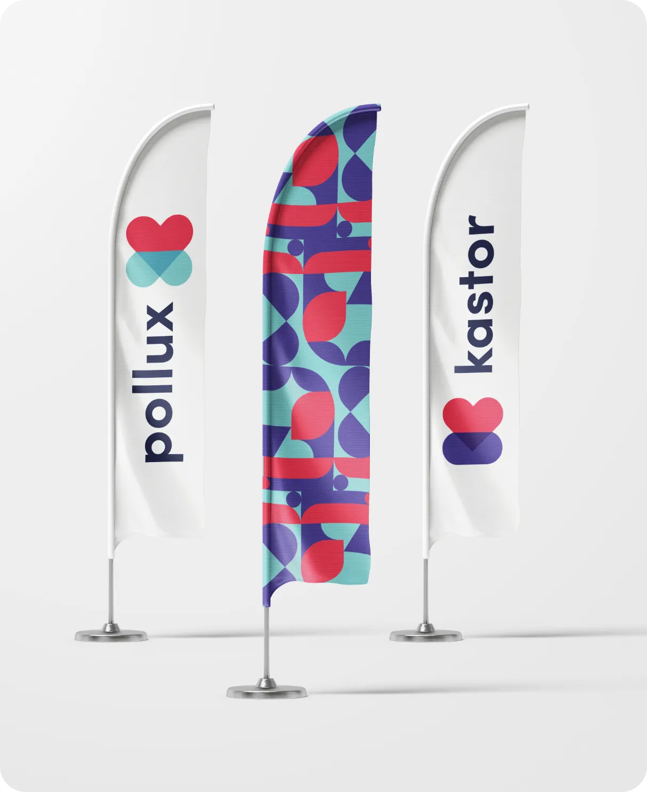
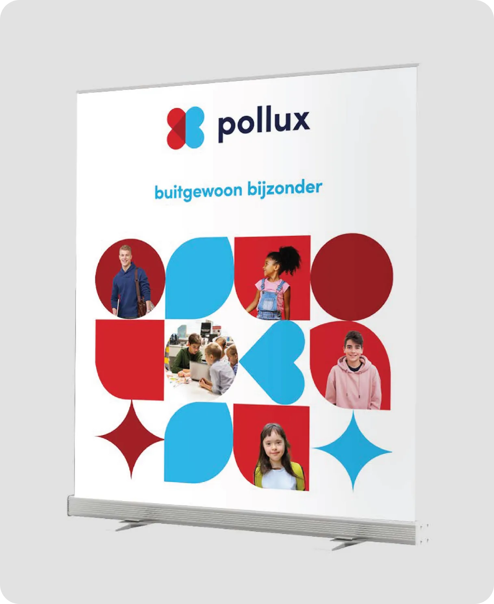
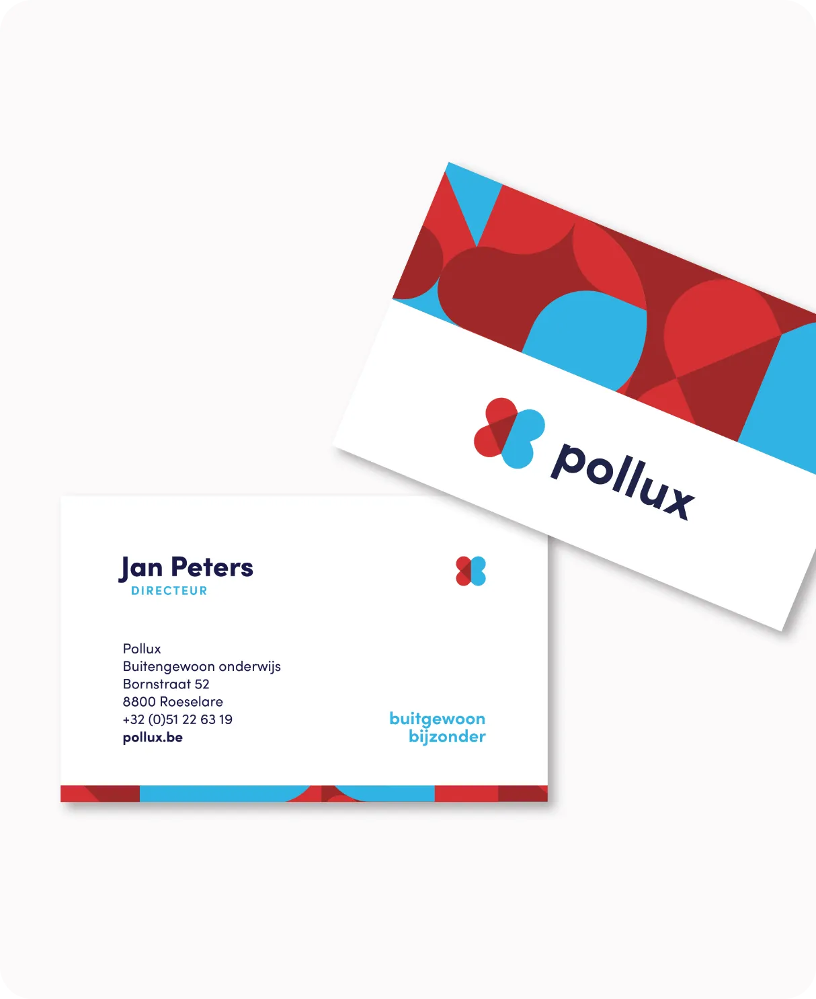
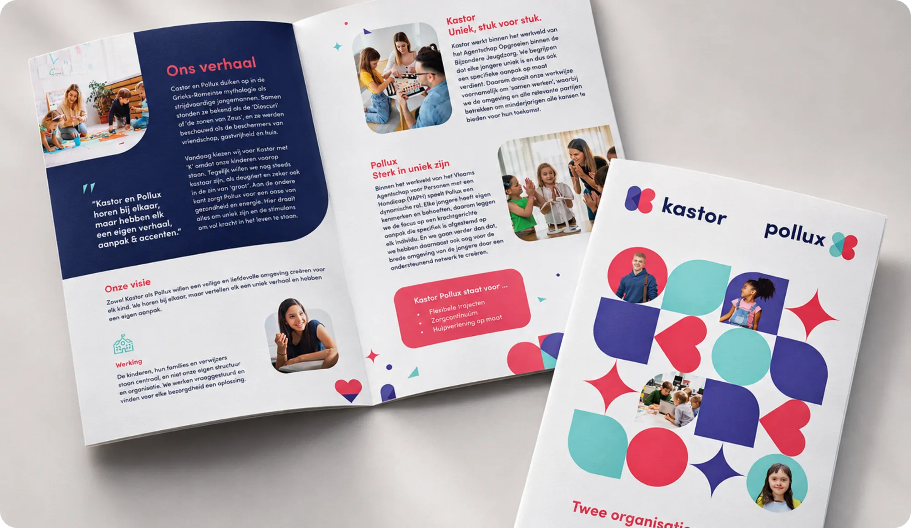

Terug
Kastor & Pollux
Voor Pollux ontwikkelde ik een volledige branding die aansluit bij de identiteit van Kastor, maar tegelijk een eigen karakter uitstraalt. Van het logo en de visuele identiteit tot patronen en diverse communicatiedragers: alles werd uitgewerkt rond de uniciteit van elk kind en het warme verhaal van de organisatie.
In opdracht van GBL Agency.






